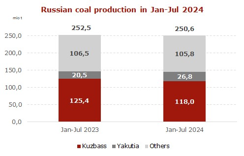
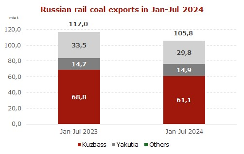

by — 6 days ago — Reading Time: 2 mins read
The annual dynamics of the decline in Russian coal exports in January-July 2024 was 12.5 times higher than the rate of production drop.
Total Russian coal extraction for 7 months of 2024 decreased to 250.6 mio t (-1.9 mio t or -0.8% y-o-y). Meanwhile, over the same period, rail shipments of coal for export collapsed to 105.8 mio t (-11.2 mio t or -10% y-o-y).

In Yakutia, coal production within 7 months of 2024 surged to 26.8 mio t (+6.3 mio t or +30.7% y-o-y). Nevertheless, export shipments rose by only 0.2 mio t or 1.4% from 14.7 mio t to 14.9 mio t.
In Kuzbass, the main coal-mining region of Russia, where high-quality coal production is located, the output in Jan-Jul 2024 dropped to 118 mio t (-7.4 mio t y-o-y). Exports for the period lost 7.7 mio t or -11.2%, falling from 68.8 mio t to 61.1 mio t. A significant part of material in Kuzbass is also processed at washing plants.
Production in other regions in Jan-Jul 2024 amounted to 105.8 mio t (-0.7 mio t or -0.7% y-o-y) with exports tumbling by 3.7 mio t or 11% from 33.5 mio t to 29.8 mio t.
Thus, in H2 2024, the global market is expected to run short of high-CV Russian coal amid a continued decline in export volumes, stemming from critical challenges, which include logistical constraints, high production costs, and international sanctions, forcing most producers to export coal at zero or negative margins. In view of railway restrictions on all export routes, Russian coal volumes are currently sold out until September-October 2024.

More than half of Russian producers have suffered losses since the beginning of the year, causing a shortfall in investment funds, resulting in a further coal production decline, falling exports and rising global prices.
Source: CCA Analytics